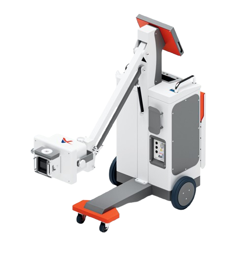
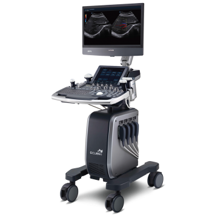
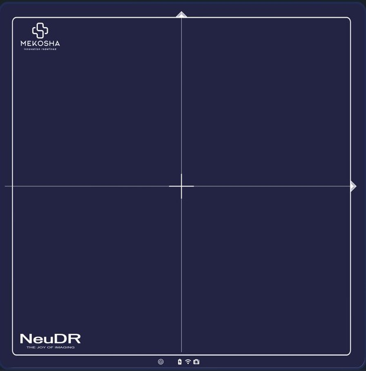

30+ years of biomedical and radiology expertise
Empowering Healthcare Through Advanced Diagnostic Solutions
We are a Gujarat-based biomedical and radiology equipment provider offering sales, installation, and servicing of advanced diagnostic systems like DR, CR, X-ray, ultrasound, mammography, and more.



Reliable diagnostic equipment solutions across India
Known for reliability and strong after-sales support, we help healthcare providers improve diagnostic accuracy and efficiency with high-quality, cost-effective solutions.
Read more about K.S. BiomedWe support the full equipment lifecycle
Selection, site planning, installation, commissioning, maintenance, compliance assistance, remote support, and technician training.
Advanced Medical Imaging Solutions
Complete radiology product coverage for modern hospitals, diagnostic centers, clinics, and teaching institutions.
Reliable performance and peace of mind
Installation, AMC/CMC and warranty support, breakdown maintenance, remote assistance, technician training, and compliance support for radiology equipment.